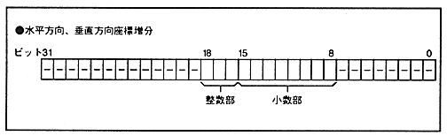

NBG0 and NBG1 can scale the entire screen horizontally and vertically. Scaling is controlled by specifying in the register the horizontal and vertical coordinate increments required to calculate the display coordinates. If you want to reduce in the horizontal direction, you must set the reduction enable register.
The display coordinates are calculated using the following formula. At this time, the decimal part of the calculation result is truncated. (Display coordinate value X) = (Coordinate increment X) x (H counter value) + (Screen scroll value X)
(Display coordinate value Y) = (Coordinate increment Y) x (V counter value) + (Screen scroll value Y)
* The enlargement / reduction of the screen is controlled by setting the coordinate increment in the horizontal and vertical directions in the coordinate increment register. The horizontal coordinate increment integer bit and horizontal coordinate increment fraction bit specify the horizontal coordinate increment, and the vertical coordinate increment integer bit and horizontal coordinate increment fraction bit specify the horizontal coordinate increment.
The decimal part bit is added immediately below the integer part bit. Figure 5.2 shows the bit configuration.
Figure 5.2 Coordinate increment register configuration
